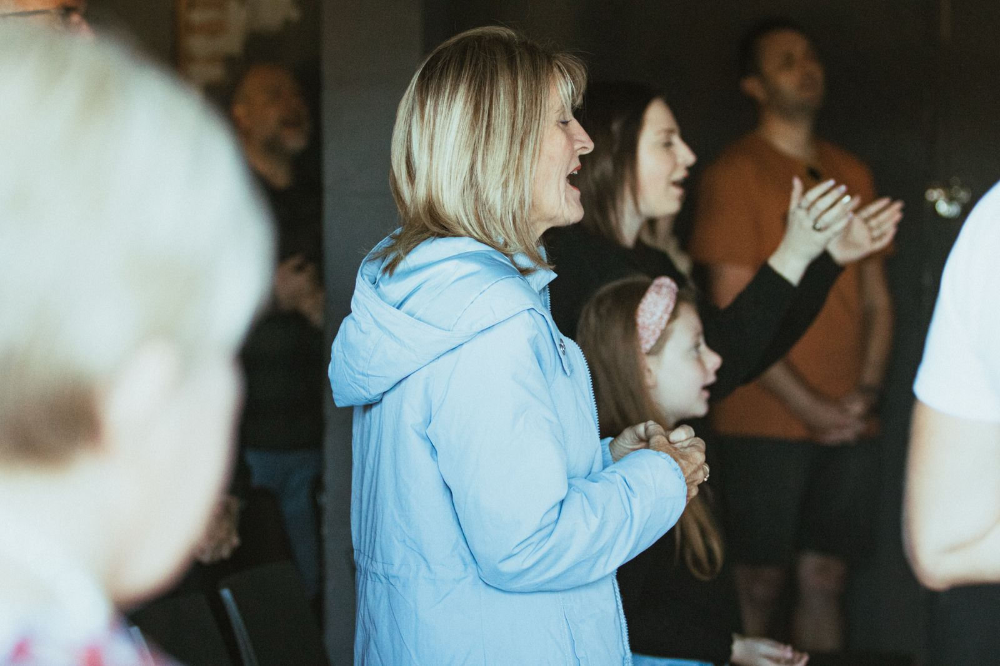
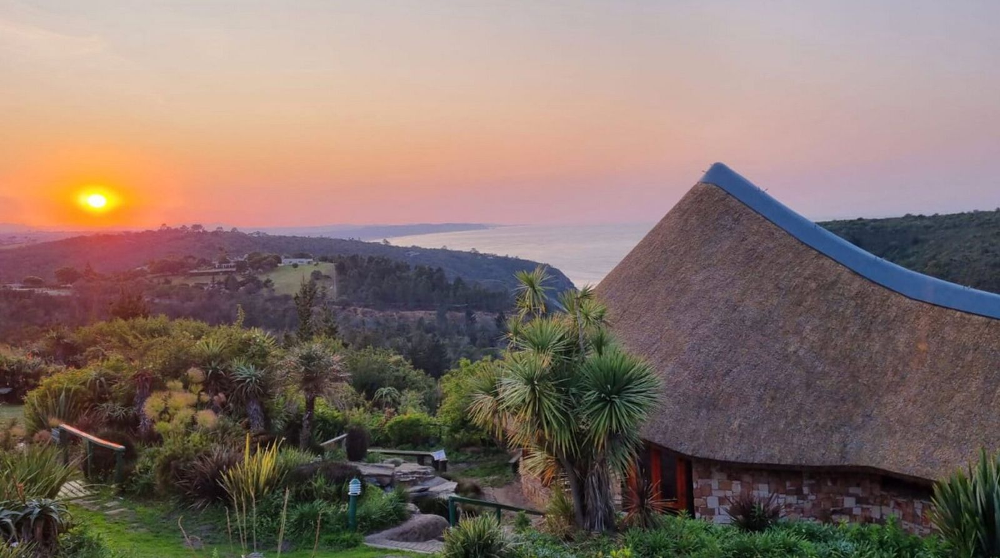

Our Community
Gathered together in Spirit as family


A relational network of leaders and churches who are walking together in Holy Spirit life and ministry, across South Africa, the United Kingdom, and beyond. Immerse is a relational, non-governing network and family that has grown by voluntary association out of our shared convictions.

The Immerse Story began in 2007 when a few pastors invited church leaders to meet together for a time of listening to one another's stories, ministry and refreshing. What emerged was a network called Isaiah58 seeking the freedom and life that comes with pursuing the fullness of life Jesus promised, while also heeding God's call to remember justice for the marginalised and poor. The gathering was so valued that it became an annual conference where leaders came both to receive and to minister to one another.
Numbers have grown, the name has changed, our understanding of the Spirit's ministry and its place in God's kingdom has deepened and ministry models have emerged that seek to equip God's people to do mission and ministry in their everyday lives in ways consistent with what Jesus modelled and imparted to his first followers. More recently Immerse has engaged with New Wine International, a like-minded, non-governing family of churches and leaders that shares our way and understanding of ministry.
Developing strategic relationships with key leaders, then leadership teams, and ultimately with local churches — fostering genuine spiritual connection within communities.
Creating environments in which we teach on and demonstrate Spirit life, with an emphasis on five-fold ministry and reciprocal spiritual impartation.
Producing resources that express our core teaching — including a teaching guide that articulates, inspires and enables people and churches to enter the Immerse pattern.
Yearly conferences, theological intensives, regional quarterly connections and inter-church partnerships unblocking "wells" in people's lives through inner healing, deliverance, prophetic ministry and worship-team development.
Grounded in the scriptures to express a robust biblical spirituality.
Celebrating biblical gifts and the five-fold anointing.
Anticipating the supernatural power of the Holy Spirit.
Confidently engaging with God's presence in life and ministry.
Focusing on personal-level ministry and church transformation.
God's kingdom transcends movements, denominations, and demographics.
Crossing cultural, geographical, generational and economic boundaries for the kingdom.

Immerse is part of the global New Wine family of churches — a wider network of leaders and congregations pursuing renewal in the Holy Spirit together, from South Africa to the United Kingdom and beyond.